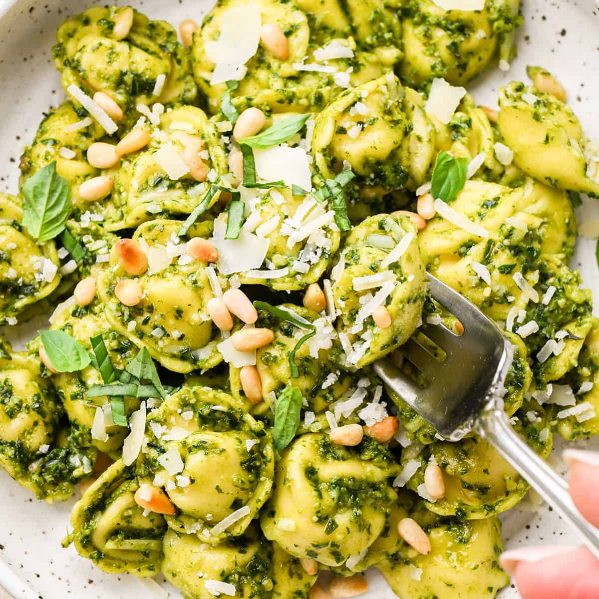

Back to Homepage
Pesto Tortellini

Description
This pesto tortellini is my all-time favorite food to make when I am wanting Italian food! This dish includes cheese-filled tortellini
smothered with a tangy, homemade basil-pesto sauce. We also add some baby tomatoes and pine nuts for some flashes of flavor and color!
We will be using a homemade pesto sauce in this recipe; however, if it is hard to find ingredients like basil. or if you would rather
purchase the sauce outright, you can use a store-bought variety.
Ingredients
- Pesto Sauce
- 2 cups of fresh basil leaves
- 1/2 cup of freshly grated Parmesan cheese
- 1/2 cup of olive oil
- 1/3 cup of pine nuts
- 3 cloves of garlic, minced
- 1/4 teaspoon of salt (or more to taste)
- 1/8 teaspoon of freshly ground black pepper (or more to taste)
- Refrigerated cheese-filled tortellini
- 2 tablespoons of toasted pine nuts
- 1/3 cup of baby tomatoes
Steps
- Pesto Sauce Steps:
- Heat the pine nuts in a sauté pan over medium heat until lightly browned.
- Reserve 2 tablespoons of toasted pine nuts and some cheese for serving.
- Mix the olive oil and the basil leaves in a blender for 60 seconds until combined. Scrape the sides of the blender down as needed.
- Add the rest of the pine nuts, garlic, cheese, and salt and pepper until you reach the desired consitency. Blend in periods of 30-60 seconds
- Add salt and/or pepper to the blend as needed to taste and pulse.
- Tortellini:
- Cook tortellini according to package instructions in salt water.
- Once finished, drain tortellini, but do not rinse!
- Add pesto sauce to cooked tortellini and stir until distributed evenly.
- Garnish pasta with the remaining toasted pine nuts, cheese, and baby tomatoes.
Source of recipe